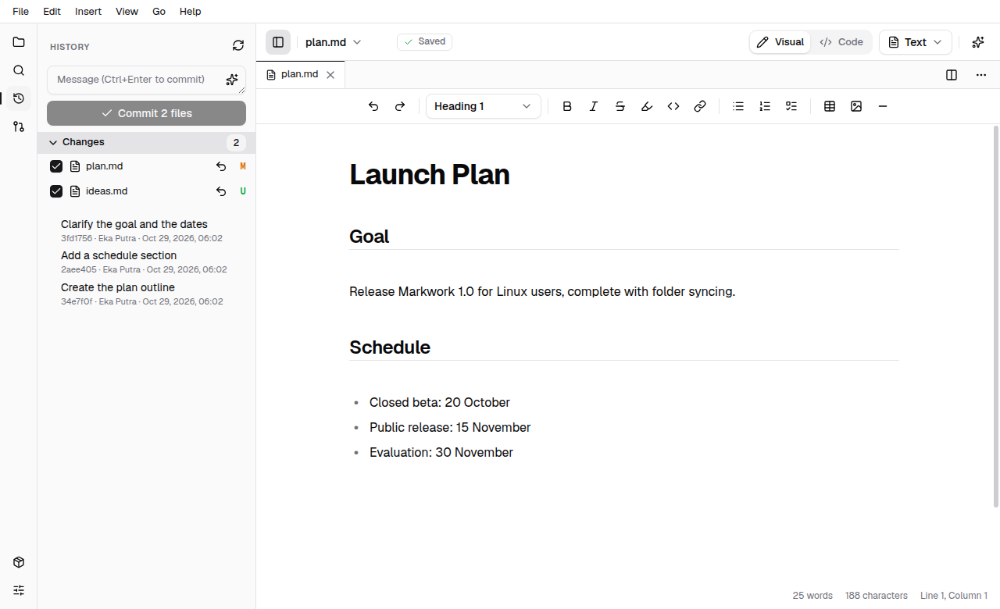
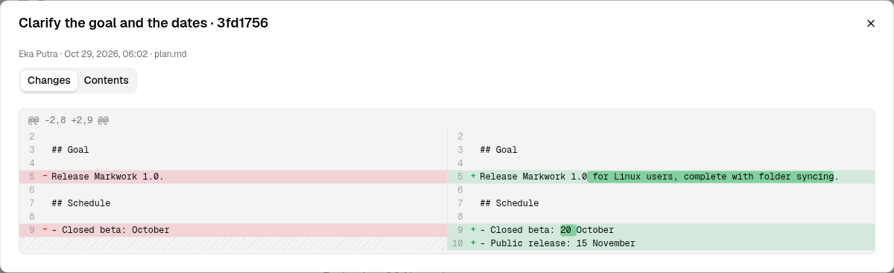

Workspace
Git history
See and save versions of your writing without leaving the editor. It needs git installed and the work folder inside a repository.

The list of commits
- The commits that touched the open file, newest first, following a renamed file.
- Click a commit to open a window with two tabs: Changes (a colored diff) and Contents of this version.
- 100 commits are loaded at a time, with a Load more button.
Uncommitted changes
- Click a file in Changes to open its diff against HEAD. A new file is shown entirely as additions.
- The commit message and full-width Commit button sit above the collapsible Changes list, with a badge showing the number of changed files. Folding the list keeps the commit form visible.
- Each file has an inclusion checkbox, its filename followed by a muted folder path, a discard action, and its status (M, A, D, R, U). Hover a row to see its full path.
- Write a message and press Commit N files to commit several files at once. Open documents are saved first.

Writing the message with the assistant
The button with the sparkle icon next to the commit message asks the assistant to write the message. It is in the History tab and in the Uncommitted changes window of one file.
- What is sent: only the diff of the checked files against the last commit (in the single-file window, that file) and the subjects of the last 10 commits, so the message follows their language and style. Nothing else in the folder is read.
- While it writes: the message streams into the box. The box, the checkboxes, and Commit are locked; the button turns into Stop, which keeps the text written so far.
- The result: one line, selected so you can retype or edit it. Ctrl+Z right after puts back what was in the box. Pressing the button again writes a new one. Nothing is committed until you press Commit.
- A large change: about 30,000 characters of diff are sent at most. Small diffs are sent whole and the largest are shortened; the status line then says so.
- It uses the API key and the model chosen in the Assistant panel's settings, with Deep thinking off. Without a key, the status line links to those settings. A network or server error is shown there too, and the box keeps what you typed.
History for the agent
The agent can read the same history through git_log, show_commit, and file_at_commit, but it never changes the repository; the commit message it writes only fills the box. See Browsing files and Git.